Instalación de un sistema de gestión empresarial
Ahora vamos a mostrar un ejemplo de un sistema de gestión empresarial y vamos a enseñarte a como puedes descargar uno
En este caso vamos a descargar un programa con una interfaz intuitiva y con una opción limitada pero gratis, este programa es Odoo
Descarga de programa desde página web
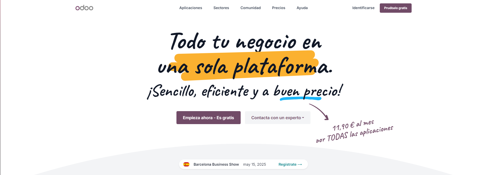
Para empezar nos vamos a dirigir a la página web del programa que será "Odoo"
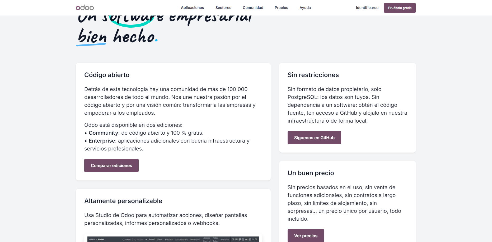Ahora bajaremos más abajo hasta que veamos una pantalla parecida a la de la captura, y le tendremos que dar a comparar ediciones
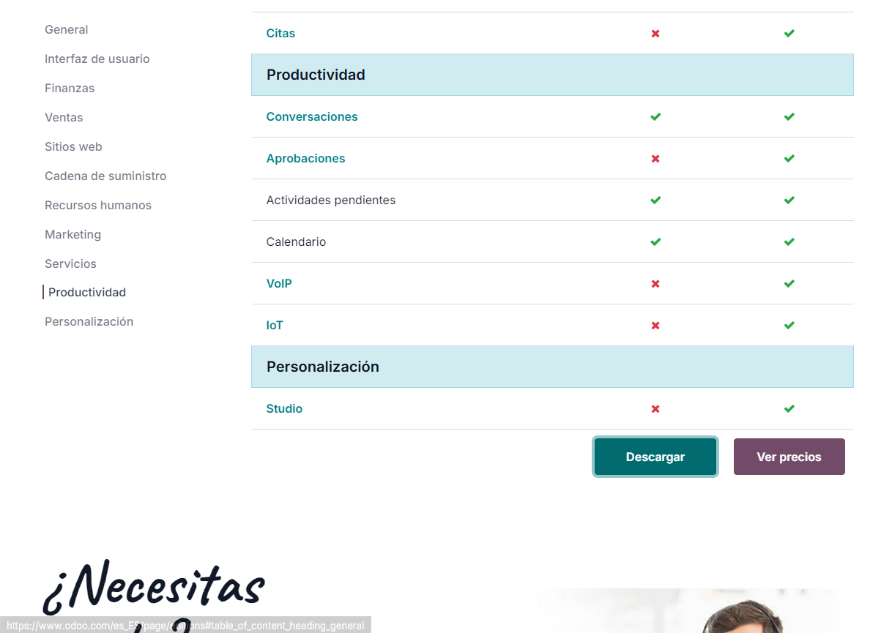Ahora cuando accedamos a la página deberemos de bajar al fondo de esta para encontrar dos botones, deberemos de darle al que dice "Descargar"

Una vez le hayamos dado nos dirigirá a otra página en la que deberemos de buscar algo parecido a lo que se muestra en la captura de pantalla, como nosotros vamos a usar Windows le daremos al botón de descargar de la versión para Windows y debería de comenzar la descarga
Instalación de programa
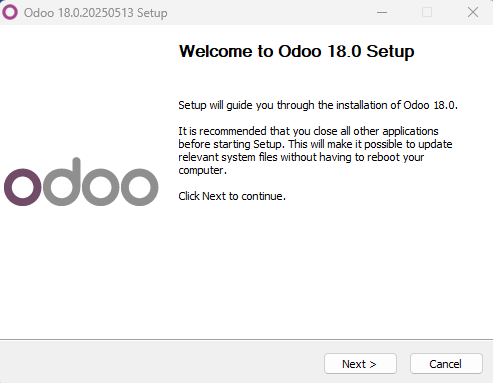
Una vez tengamos el .exe descargado deberemos de ejecutarlo para que nos salte la instalación guiada de Odoo
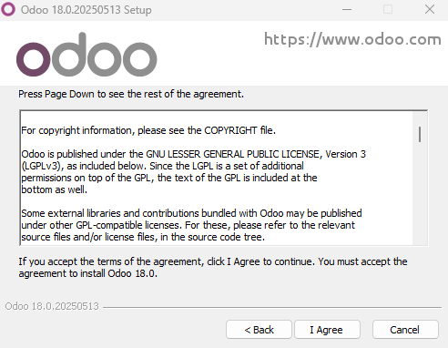Aquí aceptaremos los términos de uso del programa
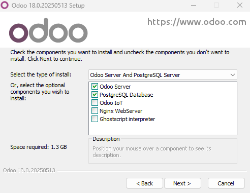En esta parte nos preguntará que cosas queremos instalar, en nuestro caso no vamos a tocar nada y vamos a dejarlo todo por defecto
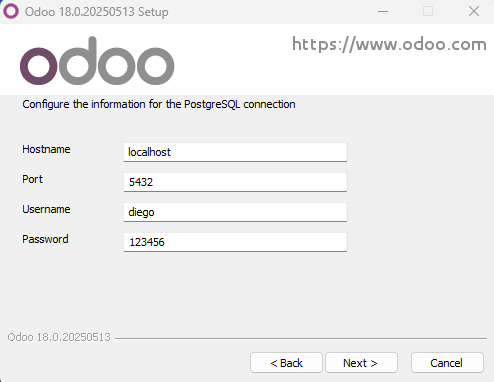Aquí deberemos de configurar el nombre local, el puerto que vamos a usar para el programa, el usuario y la contraseña de este, nos pide esto debido a que el programa funciona mediante navegador web

Aquí simplemente decidiremos la ruta de instalación del programa y una vez la hayamos asignado le daremos a "Install"
Administración de programa
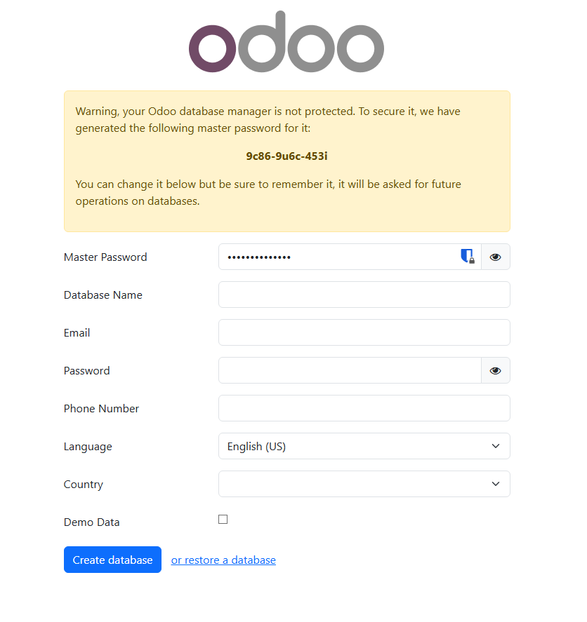
Cuando haya acabado la instalación el programa se ejecutará solo y nos enviará a la páginga web de administración del programa, donde deberemos de asignar una contraseña maestra y datos básicos para poder crear una base de datos
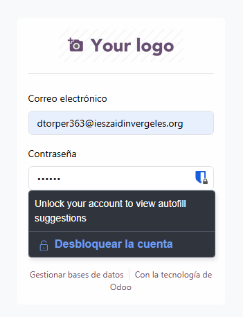Una vez hecho lo anterior la página se recargará y nos mandará el login de la administración del programa, pondremos el correo y la contraseña asignada

Cuando hayamos accedido veremos un apartado con distintas aplicaciones que podemos activar, en nuestro caso como tenemos la versión de Odoo de "Comunidad" solo podremos tener 1 activa, en nuestro caso activaremos la de ventas, simplemente le daremos a activar y se instalará y activará automáticamente
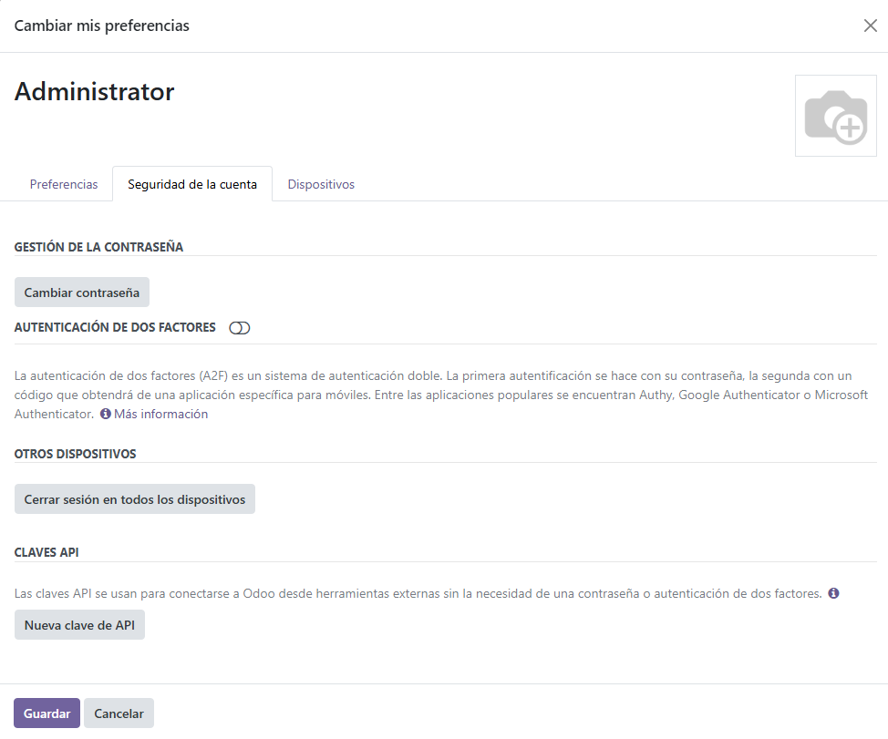Aquí podemos ver métodos de seguridad para proteger nuestro programa en contra de ataques o robos de contraseña, tenemos la opción de una autenticación de dos factores, esta lo que hace es pedirnos un código de una aplicación específica de móvil, este código es único para nuestro programa y nadie más puede conseguirlo
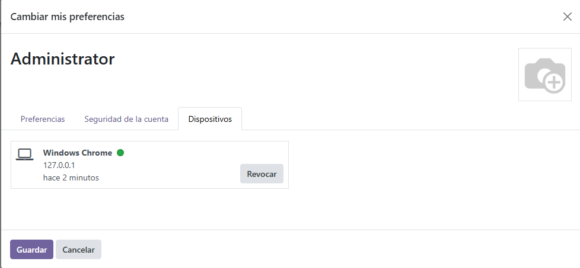En caso de dejarnos la sesión abierta, robo de dispositivo con sesión abierta o posible hackeo podemos cerrar sesión de los dispositivos conectados al programa desde este apartado, proporcionándonos un control de quién está conectado al programa y quién no
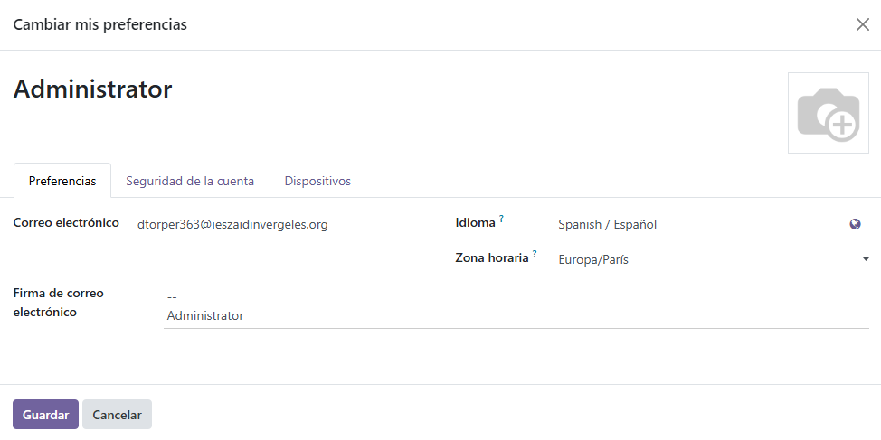Y estas son las preferencias de administrador en la que podremos cambiar todo lo que se muestra en la captura de pantalla
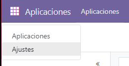Ahora para añadir nuevos usuarios al programa nos dirigiremos a la parte superior izquierda y le daremos a los cuadraditos y a ajustes
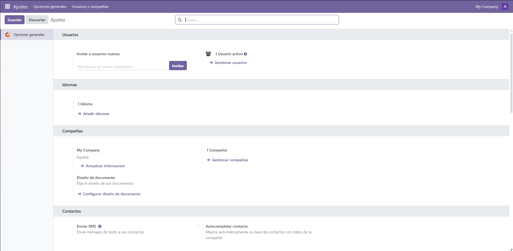Desde aquí podemos gestionar los usuarios de los que disponemos, esta opción permite crear usuarios de forma ilimitada sea cual sea nuestra versión de Odoo
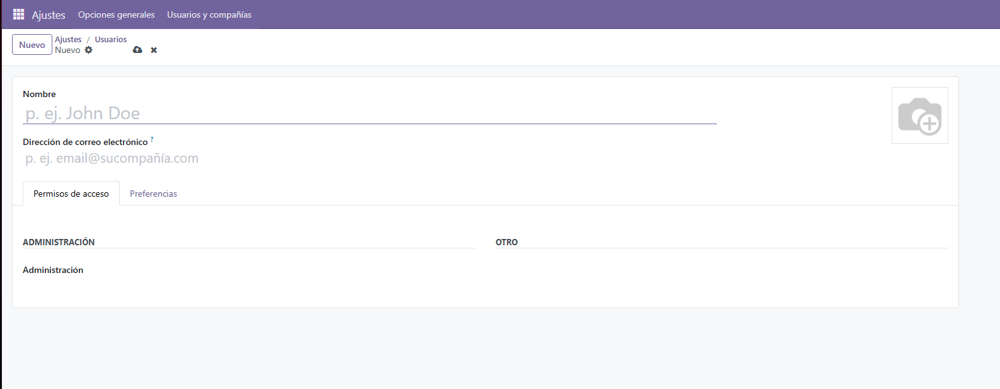Aquí tenemos un ejemplo de los datos necesarios para crear un usuario dentro de nuestro programa
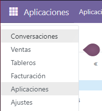Ahora vamos a ver como es el módulo de ventas para ello le damos a los cuadraditos y le daremos a "Ventas"
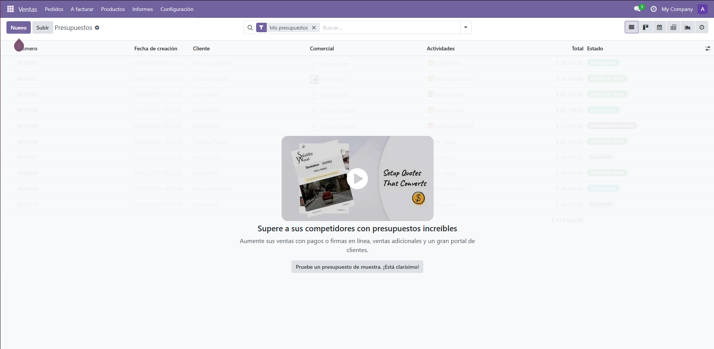Al entrar por primera vez nos muestra un pequeño tutorial de como hacer las cosas así que vamos a hacerle caso y vamos a darle donde nos muestra la flecha morada
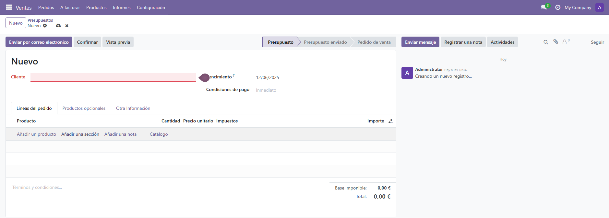Aquí podemos ver que es realmente sencillo gracias a la interfaz tan intuitiva que tiene este prorgama
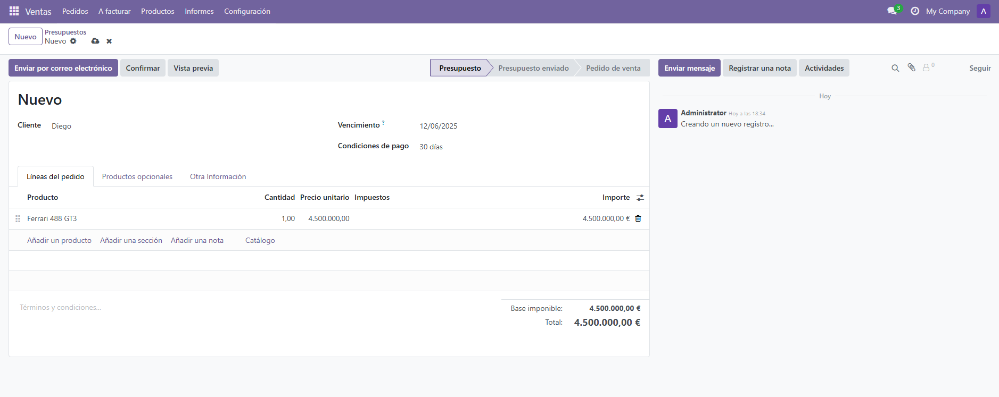En mi caso para probar el programa he creado un producto para realizar una venta a un cliente con un pago determinado, y el programa nos muestra un total de los datos introducidos
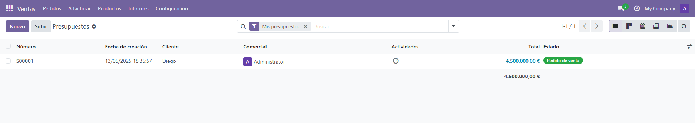Aquí podemos ver como se muestra la venta una vez añadida
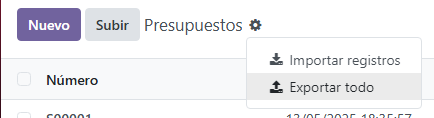También tenemos la opción de exportar estas ventas a una tabla excel, deberemos de dirigirnos a la parte mostrada en la captura de pantalla y le daremos en la ruda de configuración, posteriormente le daremos a "Exportar todo"
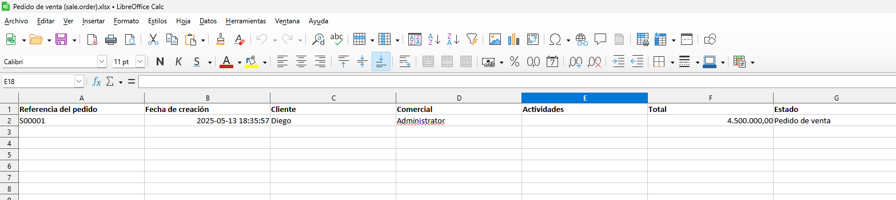Aquí podemos ver la hoja de cálculo con la venta anterior realizada